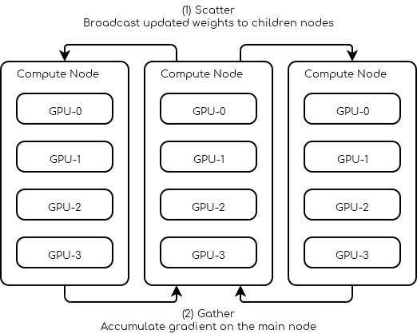

Multiple Nodes
Data Parallel

Request 3 nodes with at least 4 GPUs each.
1#!/bin/bash
2
3# Number of Nodes
4#SBATCH --nodes=3
5
6# Number of tasks. 3 (1 per node)
7#SBATCH --ntasks=3
8
9# Number of GPU per node
10#SBATCH --gres=gpu:4
11#SBATCH --gpus-per-node=4
12
13# 16 CPUs per node
14#SBATCH --cpus-per-gpu=4
15
16# 16Go per nodes (4Go per GPU)
17#SBATCH --mem=16G
18
19# we need all nodes to be ready at the same time
20#SBATCH --wait-all-nodes=1
21
22# Total resources:
23# CPU: 16 * 3 = 48
24# RAM: 16 * 3 = 48 Go
25# GPU: 4 * 3 = 12
26
27# Setup our rendez-vous point
28RDV_ADDR=$(hostname)
29WORLD_SIZE=$SLURM_JOB_NUM_NODES
30# -----
31
32srun -l torchrun \
33 --nproc_per_node=$SLURM_GPUS_PER_NODE\
34 --nnodes=$WORLD_SIZE\
35 --rdzv_id=$SLURM_JOB_ID\
36 --rdzv_backend=c10d\
37 --rdzv_endpoint=$RDV_ADDR\
38 training_script.py
You can find below a pytorch script outline on what a multi-node trainer could look like.
import os
import torch.distributed as dist
class Trainer:
def __init__(self):
self.local_rank = None
self.chk_path = ...
self.model = ...
@property
def device_id(self):
return self.local_rank
def load_checkpoint(self, path):
self.chk_path = path
# ...
def should_checkpoint(self):
# Note: only one worker saves its weights
return self.global_rank == 0 and self.local_rank == 0
def save_checkpoint(self):
if self.chk_path is None:
return
# Save your states here
# Note: you should save the weights of self.model not ddp_model
# ...
def initialize(self):
self.global_rank = int(os.environ.get("RANK", -1))
self.local_rank = int(os.environ.get("LOCAL_RANK", -1))
assert self.global_rank >= 0, 'Global rank should be set (Only Rank 0 can save checkpoints)'
assert self.local_rank >= 0, 'Local rank should be set'
dist.init_process_group(backend="gloo|nccl")
def sync_weights(self, resuming=False):
if resuming:
# in the case of resuming all workers need to load the same checkpoint
self.load_checkpoint()
# Wait for everybody to finish loading the checkpoint
dist.barrier()
return
# Make sure all workers have the same initial weights
# This makes the leader save his weights
if self.should_checkpoint():
self.save_checkpoint()
# All workers wait for the leader to finish
dist.barrier()
# All followers load the leader's weights
if not self.should_checkpoint():
self.load_checkpoint()
# Leader waits for the follower to load the weights
dist.barrier()
def dataloader(self, dataset, batch_size):
train_sampler = ElasticDistributedSampler(dataset)
train_loader = DataLoader(
dataset,
batch_size=batch_size,
num_workers=4,
pin_memory=True,
sampler=train_sampler,
)
return train_loader
def train_step(self):
# Your batch processing step here
# ...
pass
def train(self, dataset, batch_size):
self.sync_weights()
ddp_model = torch.nn.parallel.DistributedDataParallel(
self.model,
device_ids=[self.device_id],
output_device=self.device_id
)
loader = self.dataloader(dataset, batch_size)
for epoch in range(100):
for batch in iter(loader):
self.train_step(batch)
if self.should_checkpoint():
self.save_checkpoint()
def main():
trainer = Trainer()
trainer.load_checkpoint(path)
tainer.initialize()
trainer.train(dataset, batch_size)
Note
To bypass Python GIL (Global interpreter lock) pytorch spawn one process for each GPU. In the example above this means at least 12 processes are spawn, at least 4 on each node.